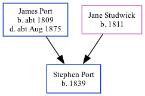

Stephen Port 1839 -
[ Home ] | [ Calendar ] | [ Surnames Index ] | [ Family History ]An agricultural laborer and the child of James Port (a barber) and Jane Studwick (a laundress), Stephen Port, the second cousin three-times-removed on the mother's side of Nigel Horne, was born in Herne, Kent, England in 18391,2,3.
Throughout his life, he lived at Herne Street in Herne on Jun 6, 18411 and on Mar 30, 18512; and at Sturry Street, Sturry, Kent, England on Apr 7, 18613.
Parents
- James was born c. 1809
- Jane Studwick was born in 1811
Citations
- 1841 England, Wales & Scotland Census - Findmypast (was age 3 and the son of the head of the household)
- 1851 England, Wales & Scotland Census - Findmypast (was age 13 and the son of the head of the household)
- 1861 England, Wales & Scotland Census - Findmypast (was age 22 and the son of the head of the household)
Family Tree
Generated by Ged2Site. Last updated on Jul 20, 2025